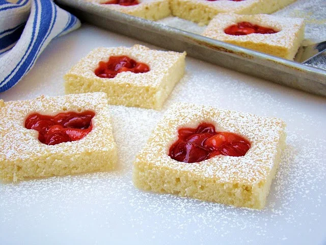

Cherry Shortcake Squares

1 cup (226g)unsalted butter, at room temperature225gsugar1 tbspfreshly squeezed lemon juice2 tsppure vanilla extract½ tspfine sea salt4 largeeggs, at room temperature2 cups (256g)unbleached all-purpose flour, spooned and leveled1 cancherry pie filling- Confectioners’ sugar, for dusting
Position a rack to the center of the oven and preheat it to 350°F. Line a half-sheet pan (about 12x17 inches with 1-inch rim) with parchment paper and spray with baking spray.
In the bowl of an electric mixer, beat together the butter and sugar on medium-high speed until very light and fluffy, about 5 minutes. Beat in the lemon juice,, vanilla, and salt. Beat in the eggs one at a time, giving each at least 30 seconds of beating to incorporate. Scrape down the bowl. Beat again for 1 minute. On the lowest speed, stir in the flour. To avoid overbeating, stop mixing when there’s a few streaks of flour left, and finish stirring the batter by hand.
Scrape the batter onto the sheet pan and smooth it into an even layer. Score the batter into 24 squares with a toothpick (don’t worry about perfectly even squares as the lines will disappear during baking; it’s just to make placing the cherries easier). Place 3 cherries in the center of every square.
Bake until a toothpick comes out clean, 25 to 30 minutes. Cool completely in the pan on a wire rack. Just before serving, cut into 24 squares and dust with confectioners’ sugar. Store any leftovers in an airtight container with layers of waxed paper or parchment for up to 3 days.